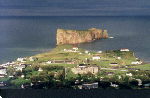
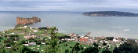
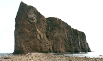
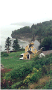
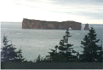
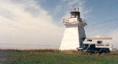
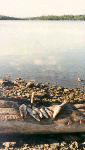
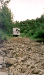

|

Percé, dans un rayon de soleil, vu
d'un point de vue du Mont Ste Anne
|

Le rocher de Percé, en Gaspésie, 438 m
de long et 88 m de haut est en calcaire garni de fossiles
qui sont pillés par les touristes... Panorama superbe
du sommet du Mont Ste Anne mais on a manqué de soleil
une fois de plus !
|

Percé vu du cordon de galets qui
permet d'aller à la base du rocher et d'en faire le
tour à marée basse.
|
|

Non loin de là, dans le Parc
Forillon, cette ancienne maison de pêcheur de
morues et ses dépendances, meublées et en
très bon état, témoignent d'un temps
où la pêche était une activité
très lucrative.
|

Percé vu de la route qui mène
à Grande Rivière, le soir tombait ...
|

Gaspésie
Les phares sont souvent en bois, tout comme les
maisons ...
|
|

Les truites du lac des 7 Iles ne valent pas nos
farios...Mais quelle belle journée nous avons
passée !
|

Les pistes sont "maganées" par l'hiver !
Heureusement le camion est haut sur pattes...
|

|